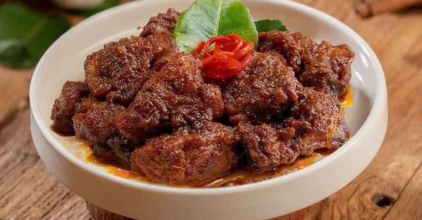

Beef Rendang Recipe

Description
Rendang is a Minang dish originating from the Minangkabau region in West Sumatra, Indonesia. It has spread across Indonesian cuisine to the cuisines of neighbouring Southeast Asian countries such as Malaysia, Singapore, Brunei and the Philippines. Rendang is often described as a rich dish of meat — most commonly beef (rendang daging) — that has been slow cooked and braised in a coconut milk seasoned with a herb and spice mixture, until the liquids evaporate and the meat turns dark brown and tender, becoming caramelized and infused with rich flavours.
As the signature dish of Minangkabau culture, rendang is traditionally served at ceremonial occasions to honour guests during festive events; such as wedding feasts and Lebaran or Hari Raya (Indonesian popular words for both Eid al-Fitr and Eid al-Adha). Rendang is also traditionally served among the Malay community in Indonesia, Malaysia, Singapore and Brunei, as well as the Maranao in the Philippines. It is one of the Indonesia's recognized national dishes. This recipe serves 4.
Ingredients
- 0.6 kg boneless beef short ribs, cut into cubes
- 5 tablespoons cooking oil
- 1 stick cinnamon, about 2-inch in length
- 3 cloves
- 3 star anise
- 3 cardamom pods
- 1 lemongrass, cut into 4-inch length and pounded
- 1 cup thick coconut milk, coconut cream
- 1 cup water
- 2 teaspoons tamarind pulp, soaked in warm water for the juice. Discard the seeds
- 6 kaffir lime leaves, very finely sliced
- 6 tablespoons kerisik, toasted coconut
- 1 tablespoon sugar, or palm sugar to taste
- salt to taste
- 5 shallots
- 1 inch galangal
- 3 lemongrass (white part only)
- 5 cloves garlic
- 1 inch ginger
- 10-12 dried chilis, soaked in warm water and seeded.
Steps
- Chop the shallots, galangal, white parts of lemongrass, garlic, ginger, and chilis and blend in a food processor until fine.
- Heat the oil in a stew pot, add the spice paste, cinnamon, cloves, star anise, and cardamom and stir-fry until aromatic. Add the beef and the pounded lemongrass and stir for 1 minute. Add the coconut milk, tamarind juice, water, and simmer on medium heat, stirring frequently until the meat is almost cooked. Add the kaffir lime leaves, kerisik (toasted coconut), sugar or palm sugar, stirring to blend well with the meat.
- Lower the heat to low, cover the lid, and simmer for 1 to 1 1/2 hours or until the meat is really tender and the gravy has dried up. Add more salt and sugar to taste. Serve immediately with steamed rice and save some for overnight.
Back to Homepage